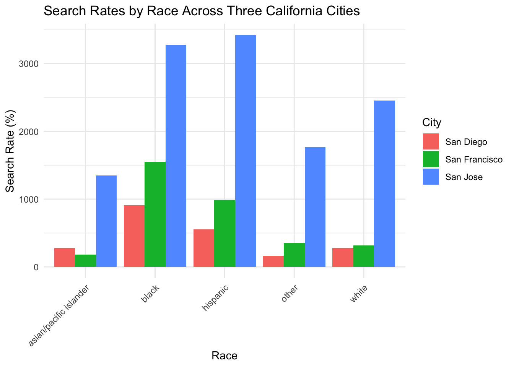
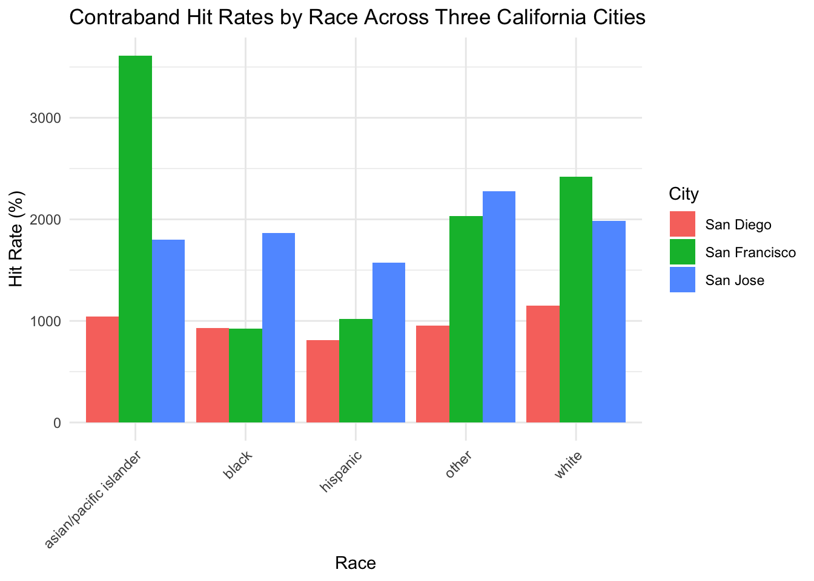
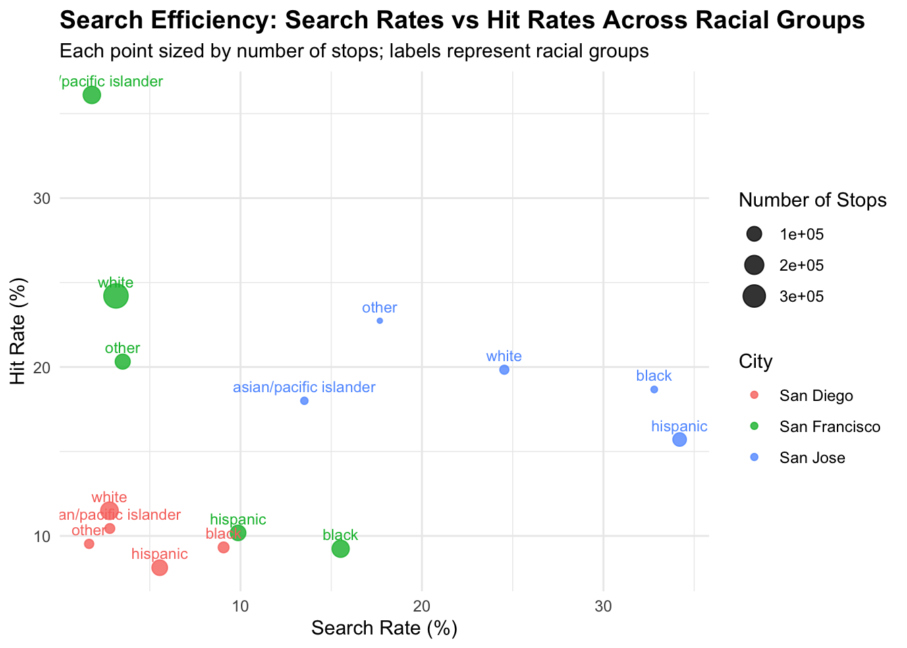

Code
library(DBI)
library(RMariaDB)
con_traffic <- dbConnect(
RMariaDB::MariaDB(),
dbname = "traffic",
host = Sys.getenv("TRAFFIC_HOST"),
user = Sys.getenv("TRAFFIC_USER"),
password = Sys.getenv("TRAFFIC_PWD")
)A comparative analysis of racial disparities in police search practices across three major California cities.
In this project, I use traffic stop data collected from California police agencies to analyze racial disparities in search behavior and contraband “hit” rates. The analysis focuses on three cities, San Francisco, San Diego, and San Jose, which provide complete and comparable datasets. Los Angeles was initially considered but excluded due to missing race data. Using SQL, I calculate stop-based and search-based proportions to examine how often drivers of different races are searched after being stopped, and how frequently those searches result in the discovery of contraband. I then compare patterns across cities to assess whether some police departments search more frequently but with lower success rates.
For this analysis, search rate is defined as the number of searches divided by the total number of stops, and hit rate is the number of searches that found contraband divided by the total number of searches. These two measures have different denominators, so comparing them directly without context can be misleading.
Original Author: Pierson, E., Simoiu, C., Overgoor, J., Corbett-Davies, S., Ramachandran, V., Phillips, C., Shroff, R., & Goel, S. (2020).
Viewing SF lables
| Field | Type | Null | Key | Default | Extra |
|---|---|---|---|---|---|
| raw_row_number | text | YES | NA | ||
| date | date | YES | NA | ||
| time | time | YES | NA | ||
| location | text | YES | NA | ||
| lat | double | YES | NA | ||
| lng | double | YES | NA | ||
| district | text | YES | NA | ||
| subject_age | bigint(20) | YES | NA | ||
| subject_race | text | YES | NA | ||
| subject_sex | text | YES | NA |
Viewing LA labels
| Field | Type | Null | Key | Default | Extra |
|---|---|---|---|---|---|
| raw_row_number | text | YES | NA | ||
| date | date | YES | NA | ||
| time | time | YES | NA | ||
| district | text | YES | NA | ||
| region | text | YES | NA | ||
| subject_race | text | YES | NA | ||
| subject_sex | text | YES | NA | ||
| officer_id_hash | text | YES | NA | ||
| type | text | YES | NA | ||
| raw_descent_description | text | YES | NA |
Viewing San Diego Lables
| Field | Type | Null | Key | Default | Extra |
|---|---|---|---|---|---|
| raw_row_number | text | YES | NA | ||
| date | date | YES | NA | ||
| time | time | YES | NA | ||
| service_area | text | YES | NA | ||
| subject_age | bigint(20) | YES | NA | ||
| subject_race | text | YES | NA | ||
| subject_sex | text | YES | NA | ||
| type | text | YES | NA | ||
| arrest_made | double | YES | NA | ||
| citation_issued | double | YES | NA |
Viewing San Jose
| Field | Type | Null | Key | Default | Extra |
|---|---|---|---|---|---|
| raw_row_number | text | YES | NA | ||
| date | date | YES | NA | ||
| time | time | YES | NA | ||
| location | text | YES | NA | ||
| lat | double | YES | NA | ||
| lng | double | YES | NA | ||
| subject_race | text | YES | NA | ||
| type | text | YES | NA | ||
| arrest_made | double | YES | NA | ||
| citation_issued | double | YES | NA |
Viewing SF, SD, and SJ search & hit rates by race
SELECT
'San Francisco' AS city,
subject_race,
COUNT(*) AS n_stops,
100 * AVG(search_conducted = 1) AS search_rate,
100 * AVG(CASE WHEN search_conducted = 1 THEN contraband_found = 1 END) AS hit_rate
FROM ca_san_francisco_2020_04_01
WHERE subject_race IS NOT NULL
GROUP BY subject_race
UNION ALL
SELECT
'San Diego' AS city,
subject_race,
COUNT(*) AS n_stops,
100 * AVG(search_conducted = 1) AS search_rate,
100 * AVG(CASE WHEN search_conducted = 1 THEN contraband_found = 1 END) AS hit_rate
FROM ca_san_diego_2020_04_01
WHERE subject_race IS NOT NULL
GROUP BY subject_race
UNION ALL
SELECT
'San Jose' AS city,
subject_race,
COUNT(*) AS n_stops,
100 * AVG(search_conducted = 1) AS search_rate,
100 * AVG(CASE WHEN search_conducted = 1 THEN contraband_found = 1 END) AS hit_rate
FROM ca_san_jose_2020_04_01
WHERE subject_race IS NOT NULL
GROUP BY subject_race
ORDER BY city, subject_race; city subject_race n_stops search_rate hit_rate
1 San Diego asian/pacific islander 32541 2.7965 10.4396
2 San Diego black 42705 9.0692 9.3209
3 San Diego hispanic 117083 5.5525 8.1218
4 San Diego other 27238 1.6558 9.5344
5 San Diego white 162226 2.7801 11.4856
6 San Francisco asian/pacific islander 157684 1.8144 36.1063
7 San Francisco black 152196 15.5208 9.2414
8 San Francisco hispanic 116014 9.8652 10.1791
9 San Francisco other 106858 3.5056 20.3150
10 San Francisco white 372318 3.1444 24.2077
11 San Jose asian/pacific islander 16062 13.5161 18.0046
12 San Jose black 13538 32.7989 18.6676
13 San Jose hispanic 79885 34.1980 15.7087
14 San Jose other 11523 17.6834 22.7446
15 San Jose white 26341 24.5407 19.8409Cleaning the data in order to visualize
Visualization 1: Search Rates by Race
ggplot(rates_clean, aes(x = subject_race, y = search_rate, fill = city)) +
geom_col(position = "dodge") +
labs(
title = "Search Rates by Race Across Three California Cities",
x = "Race",
y = "Search Rate (%)",
fill = "City"
) +
theme_minimal() +
theme(axis.text.x = element_text(angle = 45, hjust = 1))
The figure above compares the percent of drivers who were searched drivers from different racial groups across the three cities. What is clear is that the search rate varies notably by race. In all three cities, Latino and Black drivers were searched at substantially higher rates than White and Asian drivers. These results help suggest that the decision to stop and search drivers is not uniformly applied across racial groups. Furthermore, the data seems skewed because San Jose has higher hit rates across all racial groups. This does not mean that individuals in San Jose are more likely to merit searches; instead, it reflects systematic differences in policing practices and reporting standards. San Jose likely documents searches more frequently and consistently or, more plausibly, operates under a system that has policies to increase the number of searches per stop. Additionally, the discrepancy could reflect differences in reporting practices rather than actual behavioral differences among officers.
Visualization 2: Hit rates of contraband found by race
ggplot(rates_clean, aes(x = subject_race, y = hit_rate, fill = city)) +
geom_col(position = "dodge") +
labs(
title = "Contraband Hit Rates by Race Across Three California Cities",
x = "Race",
y = "Hit Rate (%)",
fill = "City"
) +
theme_minimal() +
theme(axis.text.x = element_text(angle = 45, hjust = 1))
The hit rate plot above shows differences in search effectiveness across cities. San Francisco has moderate hit rates relative to the other cities, suggesting neither especially high nor low search effectiveness. San Jose conducts far more searches but has only mid-level hit rates, indicating a lower threshold for initiating searches that frequently do not result in contraband. San Diego has the lowest hit rates overall, which implies that many searches in the city are not based on strong suspicion. As a takeaway, it seems that San Francisco’s searches are far more effective, San Jose’s are more frequent but less productive, and San Diego’s are both infrequent and largely unsuccessful. City-level differences may reflect variations in overall policy, training, or reporting practices rather than true differences in effectiveness or success. Overall, this plot highlights how policing strategies are highly varied and city-dependent, even when they all operate in the same state.
Visualization 3
library(ggplot2)
library(dplyr)
rates_eff <- rates |>
mutate(
search_rate_pct = search_rate * 100,
hit_rate_pct = hit_rate * 100
)
ggplot(rates_eff, aes(x = search_rate_pct,
y = hit_rate_pct,
color = city,
size = n_stops,
label = subject_race)) +
geom_point(alpha = 0.8) +
geom_text(vjust = -0.8, size = 3, show.legend = FALSE) +
labs(
title = "Search Efficiency: Search Rates vs Hit Rates Across Racial Groups",
subtitle = "Each point sized by number of stops; labels represent racial groups",
x = "Search Rate (%)",
y = "Hit Rate (%)",
color = "City",
size = "Number of Stops"
) +
theme_minimal() +
theme(plot.title = element_text(size = 14, face = "bold"))
Note: Search rate = % of drivers searched; Hit rate = % of searches that found contraband.
For this visualization, I aimed to explore whether some racial groups are searched more frequently yet found with contraband less often. Conversely, some groups are searched less frequently but yield higher contraband “hit” rates. The goal was to uncover potential biases or disparities in officers’ decision-making. The plot compares search rates, the percent of drivers who were searched—against hit rates, or the percent of searches that resulted in contraband. San Diego shows both low search rates and low hit rates across all racial groups, suggesting fewer searches overall but also lower efficiency. San Francisco, by contrast, displays moderate search rates paired with higher hit rates, indicating more targeted and successful searches. Notably, San Francisco shows much higher hit rates for Asian American drivers than for Black drivers, which may point to racial profiling or a lower threshold of suspicion when deciding to search Black drivers. San Jose consistently has the highest search rates but only moderate hit rates, implying that officers conduct more searches overall but with lower effectiveness.
Conclusion-
Across San Francisco, San Diego and San Jose, the data above highlights clear racial disparities when it comes to the frequency of drivers being searched and how effective those searches are. Cities have stark differences in regards to search intensity as well as efficiency. San Francisco for example, conducts fewer yet more targeted searches. Where San Jose searches far more often but with lower success rates.
Together, these results help suggest that policing strategies and potential biases vary substantially across police jurisdictions. This helps underscore the need for consistent statewide oversight that involves data driven policy reform.
Sources Cited:
Pierson, Emma, et al. “A Large-Scale Analysis of Racial Disparities in Police Stops Across the United States.” Nature Human Behaviour, 2020. Data from: Stanford Open Policing Project (https://openpolicing.stanford.edu ).